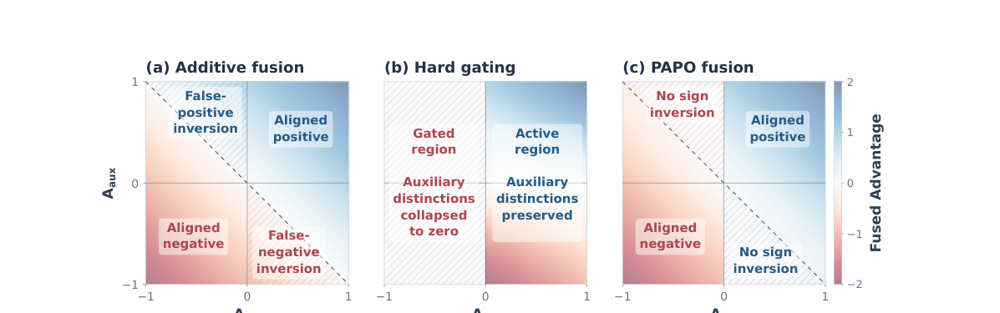
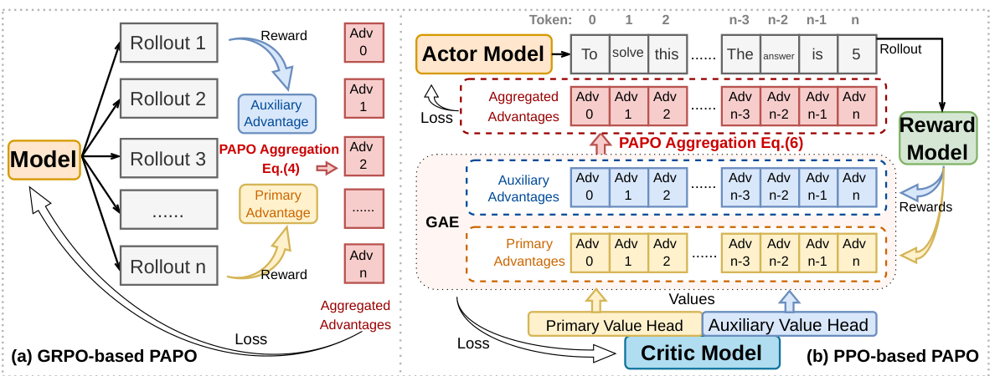
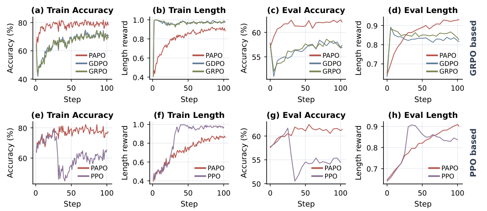

Solve the task
Answer correctly or complete the tool-use task.
MULTI-REWARD REINFORCEMENT LEARNING
PAPO · Primary Advantage Policy Optimization
1Georgia Institute of Technology2Dartmouth College3University of Notre Dame
Keep the task first.
Make auxiliary rewards work with it.

TL;DR. Auxiliary rewards should refine how a task is solved, without overturning the primary objective. PAPO makes this priority explicit when combining advantages.
Multi-reward reinforcement learning (RL) is increasingly used to optimize large language models for both task performance and auxiliary behavioral objectives, such as concise reasoning and efficient tool use. However, existing approaches typically combine objective-specific rewards or advantages symmetrically, implicitly allowing auxiliary objectives to influence the policy update as strongly as the task-defining objective. We term this advantage priority inversion: when primary and auxiliary advantages conflict, a sufficiently strong auxiliary signal can reverse the update direction preferred by the primary objective.
In light of this, we propose Primary Advantage Policy Optimization (PAPO), a priority-aware framework for multi-reward policy optimization. PAPO explicitly distinguishes primary and auxiliary objectives and performs asymmetric advantage aggregation. Auxiliary advantages are fully preserved when they agree with the primary signal, but are softly bounded under conflict so that they cannot overturn the primary optimization direction. The framework applies naturally to both sequence-level GRPO and token-level PPO; for PPO, we additionally use a multi-head critic to estimate objective-specific returns before advantage fusion. We evaluate PAPO on competition-level mathematical reasoning and agentic tool use with multiple rewards across PPO- and GRPO-based training. PAPO consistently improves primary-task performance while retaining strong auxiliary-objective performance.
01 / MOTIVATION
A shorter answer is useful when it is correct. Fewer tool calls are useful when the task still succeeds. Yet a large auxiliary advantage can overwhelm a conflicting primary advantage under a weighted sum.
Answer correctly or complete the tool-use task.
Use fewer reasoning tokens or fewer tool calls.
Advantage priority inversion: an update can reward a response with a negative primary advantage, simply because its auxiliary advantage is large enough.
02 / METHOD
PAPO estimates objective-specific advantages before combining them. Aligned signals add together; conflicting auxiliary signals are smoothly bounded relative to the primary advantage.

Independently normalize each objective within the rollout group, fuse primary and auxiliary advantages, then normalize the fused group before optimization.
Use a multi-head critic to estimate each objective’s return. Compute GAE separately and apply PAPO at each token, keeping critic targets unfused.
INTERACTIVE EXAMPLE
Move the auxiliary advantage to see when additive fusion changes direction.
Illustrative fusion with α = 1, before any subsequent group normalization. This is an advantage-level demonstration, not a training simulation. At zero primary advantage, the aligned branch uses the auxiliary signal.
03 / EXPERIMENTS
Qwen3-8B results on mathematical reasoning and agentic tool use. All values below are taken from Tables 1 and 2 of the paper.
Math accuracy · GRPO-based PAPO
+5.2 pp over GRPO
Math length compliance
GRPO-based PAPO
Tool-use accuracy · GRPO-based PAPO
0.33 average tool calls, matching GRPO
| Method | Optimization | Accuracy (%) ↑ | Length compliance (%) ↑ |
|---|
PAPO is highlighted within each optimization family. Auxiliary performance is not uniformly best: for tool use, PPO-based PAPO uses 0.56 calls versus PPO’s 0.37, with higher accuracy (88.25% versus 86.25%).
04 / TRAINING DYNAMICS
The paper’s training curves show PAPO improving the auxiliary length objective while maintaining stronger primary-task accuracy across GRPO- and PPO-based optimization.

@misc{yuan2026advantage,
title={Advantage Aggregation with Priority for Multi-Reward Policy Optimization},
author={Yuan, Xiangchi and Diao, Xingjian and Liu, Zheyuan and Zhang, Chunhui and Shi, Dachuan and Xia, Kejing and Du, Zhenbang and Yao, Shenglong and Vosoughi, Soroush and Lee, Wenke},
year={2026},
url={https://xiangchi-yuan.github.io/data/ICLR_2027_Advantage_Integration.pdf}
}Manuscript citation; publication details can be updated upon release.